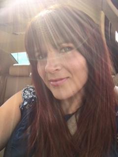

Connect with Me


Adventure, Challenges, Drive, Focus, Fitness, Growth, Fun are just a few words that help describe me. I am a believer that we are all complex beings and there are many layers to an individual. Like an onion as referenced in the movie "Shrek". I also believe that you can never read a book by its cover. There is too much involved to know a person by their exterior.
As I expand in each chapter of my life I want to be sure to enjoy the moments that build the chapter. To be the best me and to not miss a page. No matter what that moment brings. Always expanding and growing.